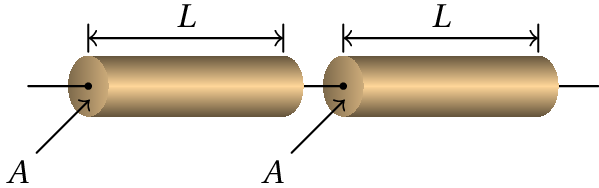

"Em termos gerais, os efeitos da corrente no corpo humano são
os seguintes:
com menos do que 0.01 A: sensação de formigueiro ou nada se sente;
0.02 A: sensação de dor e fica-se agarrado;
0.03 A: perturbações respiratórias;
0.07 A: grandes dificuldades respiratórias;
0.1 A: morte devido a fibrilação;
mais do que 0.2 A; não existe fibrilação mas verificam-se
queimaduras muito graves e cessa a respiração.
A gama intermédia que vai de 0.1 a 0.2 A é, por estranho que pareça, a
que origina a maior parte das mortes nas situações comuns, porque a
este nível de intensidade inicia-se a fibrilação do coração, que
consiste numa contração muscular espasmódica e incontrolada do
coração. A quebra da corrente sanguínea daí resultante origina
rapidamente a morte. Acima de 0.2 A o coração simplesmente pára e as
medidas normais de primeiros socorros podem restabelecer o seu
funcionamento. Mas o único processo para deter a fibrilação é um outro
choque elétrico controlado. Por isso, correntes entre 0.1 e 0.2 A são
mais mortais do que correntes mais intensas. A intensidade de corrente
que passa por uma vítima é geralmente determinada pela resistência da
pele que vai de cerca de 1000 Ω para peles molhadas até 500 000 Ω para
peles secas. A resistência interna é menor do que a da pele, estando
compreendida entre 100 e 500 Ω . Para voltagens superiores a cerca de
240 V, geralmente resulta a perfuração da pele pela corrente."
O Grande Circo da Física (Walker, 1975,
pp. 463–464).
3.1. Caraterísticas voltagem-corrente
A potência elétrica dissipada num dispositivo (por exemplo, numa
lâmpada) é igual ao produto da diferença de potencial entre os
extremos do elemento pela corrente que o percorre:
. Duas lâmpadas diferentes podem dissipar diferentes potências,
quando são ligadas à mesma voltagem. Por exemplo, existem lâmpadas
pequenas, de 12V, com potências de 1 W e de 2 W; isso indica que para
o mesmo valor da diferença de potencial, a corrente na lâmpada de 2 W
é o dobro da corrente na lâmpada de 1 W.
Cada dispositivo tem uma curva caraterística que mostra os valores
resultantes da corrente,
, para diferentes valores da diferença de
potencial,
. A figura 3.1 mostra algumas dessas
curvas caraterísticas para três elementos diferentes.
Figura 3.1: Caraterísticas voltagem-corrente de três dispositivos diferentes.
3.2. Lei de Ohm
Em alguns condutores (o caso a na figura 3.1),
designados de ohmicos, a curva
caraterística é uma reta que passa pela origem. Essa relação linear
entre
e
expressa-se matematicamente pela
Lei de Ohm:
(3.1)
onde
é uma constante chamada
resistência, que corresponde ao declive da
caraterística voltagem-corrente. Um condutor ohmico designa-se
simplesmente por resistência. A figura 3.2 mostra o símbolo
usado para representar uma resistência nos circuitos.
Figura 3.2: Símbolo de resistência num circuito.
Nos elementos não ohmicos (b e c na
figura 3.1) pode também definir-se a resistência
pela
relação
, mas observe-se-se que nesses casos
não é
constante e também não é o declive da caraterística voltagem-corrente,
mas sim o declive de uma reta que passa pelo respetivo ponto e pela origem.
No sistema internacional, a unidade usada para medir a resistência é o
ohm representado pela letra grega Ω (ómega
maiúsculo). Uma resistência de 1 ohm é uma resistência em que uma
voltagem de 1 volt produz uma corrente de 1 ampere:
(3.2)
Usando a lei de Ohm, a potência dissipada por efeito Joule numa
resistência (
) pode ser escrita em função do valor da
resistência:
(3.3)
a potência dissipada pelo dispositivo depende da voltagem à que for
ligado. A potência nominal, indicada pelo fabricante, é a potência
que dissipa quando for ligado à diferença de potencial recomendada
pelo fabricante. Comparando dispositivos com a mesma voltagem nominal,
quanto maior a potencia nominal, menor será a resistência do
dispositivo.
Figura 3.3: Cada eletrodoméstico tem uma potência elétrica nominal.
3.3. Caraterística de uma bateria
No modo normal de funcionamento das baterias ou
pilhas, em que a corrente entra na bateria pelo elétrodo
negativo e sai pelo elétrodo positivo, a energia elétrica das cargas
de condução aumenta quando passam pela bateria; ou seja, a bateria
fornece energia elétrica e diz-se que funciona como
gerador. As reações químicas no eletrólito
fornecem potência elétrica
. Uma parte dessa potência
é dissipada em calor dentro da própria bateria, devido à passagem das
cargas pelos elétrodos e pelo eletrólito. Se os elétrodos e o
eletrólito são condutores ohmicos, com resistência total
, a
potência dissipada em calor dentro da bateria é
e, assim
sendo, a potência fornecida pela bateria ao dispositivo ligado entre
os elétrodos é
. Como essa potência fornecida
ao dispositivo é igual a
, obtém-se então a expressão da
caraterística da bateria, no modo normal em que fornece energia a um
dispositivo:
(3.4)
A figura 3.4 mostra a caraterística do gerador. A ordenada
na origem é o valor da f.e.m. e o valor absoluto do declive é a
resistência interna da bateria,
. A corrente
é a corrente máxima que pode
fornecer a bateria, quando for ligada em
curto-circuito (diferença de potencial
nula entre os elétrodos).
Figura 3.4: Caraterística voltagem-corrente de uma bateria.
Nas baterias recarregáveis, o sentido normal da corrente pode ser
invertido, ligando outra fonte externa com f.e.m. maior que a da
bateria e contrariando a sua polaridade. Nesse caso, a corrente entra
na bateria pelo elétrodo positivo e sai pelo elétrodo negativo. As
cargas de condução perdem energia elétrica durante a sua passagem pela
bateria. A bateria está então a absorver potência elétrica
, que está a ser fornecida pela fonte externa. A bateria
passa a funcionar como recetor. Uma parte
dessa potência absorvida é usada para inverter as reações químicas no
eletrólito, aumentando o número de catiões e aniões; essa parte é
igual
. A outra parte da potência absorvida pela
bateria é dissipada em calor na resistência interna e é igual a
. Como tal, a caraterística da bateria, no modo recetor, é
(3.5)
A figura 3.5 mostra as caraterísticas da bateria nos dois
modos de funcionamento. Nos dois casos, o valor absoluto do declive é
igual à resistência interna
. A voltagem da bateria só é igual ao
valor da sua f.e.m. quando a bateria não está ligada a nenhum
dispositivo (corrente nula). Quando a bateria é ligada a um
dispositivo, passando corrente através dela, a voltagem da bateria é
maior que a f.e.m. no modo de receptor e menor que a f.e.m. no modo de
gerador. No modo de gerador, quando a bateria está em curto-circuito
(ligam-se os dois terminais da bateria entre si), a voltagem diminui
para zero, e toda a energia fornecida pelas reações químicas é
dissipada em calor dentro da própria bateria, descarregando-se
totalmente, se antes não se queimar pelo calor dissipado.
Figura 3.5: Caraterísticas de uma bateria recarregável nos dois modos de operação.
O diagrama de circuito correspondente deve incluir uma f.e.m. ligada
em série a uma resistência
. Tal como foi referido no capítulo
anterior, a barra mais comprida na f.e.m. representa o elétrodo
positivo e a barra mais curta o elétrodo negativo. A
figura 3.6 mostra os diagrama de circuito de uma bateria
quando está a fornecer energia a um dispositivo (gerador) e da mesma
bateria quando está a ser recarregada (recetor) por uma fonte
externa. A letra A indica o ânodo e a letra C o
cátodo. Por definição, o cátodo é o terminal para onde
se deslocam os catiões e o o ânodo o terminal para onde se deslocam os
aniões. O sentido da corrente indica o sentido do deslocamento do
catiões, ou seja que a corrente vai sempre do ânodo para o
cátodo. Como o sentido da corrente é oposto nos dois casos, o cátodo e
o ânodo invertem-se nos dois modos de operação.
Figura 3.6: Bateria recarregável operando como gerador ou recetor.
No modo de gerador, a bateria fornece energia ao dispositivo e a carga
no eletrólito diminui. O sentido da corrente mostra que o potencial do
ponto A é maior do que o do ponto B (figura 3.6); como o
potencial de C também é maior que o de B, a voltagem da bateria
(
) é o valor da f.e.m. menos a diferença de
potencial em
, obtendo-se a equação 3.4. No modo recetor,
a bateria absorve energia da fonte externa e a carga no eletrólito
aumenta. O sentido da corrente indica que
é maior que
e como o potencial de A é maior que o de B, a voltagem
da bateria (
) é o valor da f.e.m. mais a
diferença de potencial em
, obtendo-se a equação 3.5.
3.4. Código de cores para resistências
As resistências usadas comumente nos circuitos eletrónicos são
pequenos cilindros de carbono, com um isolamento cerâmico. No circuito
da figura 3.7 todos os cilindros com riscas de cores são
resistências. Usam-se 4 riscas de cores para
indicar o valor da resistência.
Figura 3.7: Circuito impresso
(PCB) com
duas resistências de 10 kΩ (
6 e
8) e uma de 1 kΩ (
7).
A correspondência entre cores e algarismos é dada na
tabela 3.1. Três das riscas estão mais próximas umas das
outras; as duas primeiras dessas riscas, contadas a partir do extremo
mais próximo do cilindro, representam os dois algarismos de um número
inteiro entre 0 e 99. A terceira risca indica a ordem de grandeza
desse número, em ohms, usando a mesma relação entre cores e algarismos
da tabela acima. A quarta risca, mais afastada das outras três,
representa a tolerância (erro relativo) no valor indicado para a
resistência.
Tabela 3.1: Código de cores para resistências.
Cor
Algarismo
Tolerância
Preto
0
Castanho
1
1%
Vermelho
2
2%
Laranja
3
Amarelo
4
Verde
5
0.5%
Azul
6
0.25%
Roxo
7
0.1%
Cinza
8
0.05%
Branco
9
Dourado
5%
Prateado
10%
Nenhuma
20%
Por exemplo, se as cores das 3 riscas mais próximas fossem laranja,
preta e azul e a quarta risca for prateada, o valor da resistência
seria:
(
).
3.5. Resistividade
A resistência de um condutor ohmico resulta das colisões entre as
cargas de condução e os átomos ou iões. As cargas de condução são
aceleradas pela força eletrostática, mas devido às colisões acabam por
se deslocar a uma velocidade média constante. A resistência é
determinada pela relação que existir entre a velocidade média atingida
e a diferença de potencial (por unidade de comprimento) que produz o
movimento. Os fatores que determinam o valor da resistência são: a
natureza do material, o tamanho do condutor e a temperatura.
Para estudar a influência do tamanho do condutor, considerem-se dois
cilindros condutores idênticos, de comprimento
e área transversal
, cada um com resistência
, ligados em série
(figura 3.8).

Figura 3.8: Dois cilindros condutores ligados em série.
A combinação em série é equivalente a um único cilindro de comprimento
e se a corrente for
, a diferença de potencial será
; a resistência do sistema é então
. A resistência
é então diretamente proporcional ao comprimento do condutor.
Se os mesmos dois cilindros condutores fossem ligados em paralelo,
como se mostra na figura 3.9, o sistema é agora equivalente
a um único condutor de comprimento
e área transversal
. Neste caso, a diferença de potencial é igual em ambos
cilindros (
), a corrente em cada cilindro é
e a
corrente total é
, que corresponde à corrente num
sistema com resistência
. Ou seja, duplicando a área transversal,
a resistência diminui a metade, o que significa que a resistência é
inversamente proporcional à área da secção transversal do condutor.
Figura 3.9: Dois cilindros condutores ligados em paralelo.
Resumindo, a resistência de um condutor com comprimento
e área
transversal
pode ser expressa como
(3.6)
onde a constante de proporcionalidade,
, é a
resistividade do material, que depende
da natureza do material e da temperatura. Nos condutores ohmicos, a
resistência aumenta com a temperatura, de modo quase linear (ver
figura 3.10), para temperaturas afastadas do zero absoluto (
°C).
Figura 3.10: Variação da resistência de um condutor em função da temperatura
absoluta.
A expressão obtida de forma empírica para a resistência de um condutor
em função da temperatura é então
(3.7)
onde
é a resistência a 20 °C ,
é o
coeficiente de temperatura
e
é a temperatura em graus Celsius. Cada material tem um
coeficiente de temperatura próprio que é medido
experimentalmente. Note-se que o declive da reta na
figura 3.10 é o produto
e, como tal,
apesar do declive ser quase constante, o valor da constante
depende da temperatura. A tabela 3.2 mostra os valores da
resistividade e do coeficiente de temperatura de alguns materiais a
20 °C. A grafite, que é um semicondutor, tem um coeficiente de
temperatura negativo, o que quer dizer que a 20 °C a sua resistência
diminui quando a temperatura aumenta.
Tabela 3.2: Resistividade e coeficiente de temperatura de alguns
materiais, a 20 °C.
Material
(nΩ·m)
(°C−1)
Prata
16
0.0038
Cobre
17
0.0039
Alumínio
28
0.0039
Tungsténio
55
0.0045
Ferro
100
0.0050
Chumbo
220
0.0043
Níquel-crómio
1000
0.0004
Grafite
35000
Exemplo 3.1
Um fio de cobre de raio 0.0815 cm e comprimento de 40 cm transporta
uma corrente de 1 A. Calcule o campo elétrico dentro do fio e a
diferença de potencial nos extremos, quando a temperatura for de
30 °C.
Resolução. Usando o valor de
para o cobre
(tabela 3.2), a resistência a 20 °C é:
e usando o valor de
do cobre na equação 3.7,
obtém-se:
A diferença de potencial obtém-se a partir da lei de Ohm:
Como a secção transvesal do fio é constante, o módulo do campo
elétrico também deve ser constante e, portanto, pode ser calculado
através da expressão para o campo elétrico médio
3.6. Supercondutividade
Em 1911, o físico holandês Heike Kamerlingh
Onnes (1853-1926) descobriu que a
resistividade de alguns condutores diminui drasticamente quando a
temperatura se aproxima do zero absoluto (
°C). O gráfico da
figura 3.11 mostra os valores da
resistividade do mercúrio, medidos por
Onnes perto dos 4 Kelvin (
°C),
Figura 3.11: Resistividade do mercúrio a baixas temperaturas.
Abaixo da temperatura crítica
(4.2 K no caso do mercúrio) a resistividade dos supercondutores
diminui dum fator de aproximadamente 1012, tornando-se
praticamente nula. Isso implica a
possibilidade de manter uma corrente a circular no supercondutor,
durante alguns anos, sem existirem fontes de voltagem!
Nas experiências de levitação
magnética coloca-se um íman sobre um material supercondutor (ver
figura 3.12). O ímaninduz no supercondutor correntes elétricas
que produzem um campo magnético oposto ao campo do íman; em condições
normais, essas correntes desaparecem rapidamente devido a efeitos
dissipativos no supercondutor. No entanto, se o sistema for arrefecido
até uma temperatura inferior à temperatura crítica do supercondutor,
as correntes persistem e o disco eleva-se no ar devido à repulsão
magnética (efeitoMeissner).
Figura 3.12: Levitação magnética de um íman cúbico sobre um disco de
material supercondutor.
Essas experiências têm a dificuldade de não ser fácil atingir
temperaturas tão baixas e mantê-las durante algum tempo. Mas
hoje em dia já há materiais com
temperaturas críticas
muito mais elevadas, embora ainda na ordem dos
°C .
O princípio da levitação magnética já está a ser aplicado
comercialmente nos comboios maglev em Xangai e
no Japão (ver figura 3.13). O comboio possui barras
supercondutoras em vez de rodas e os carris são substituídos por uma
calha onde vários eletro-ímanes produzem campos magnéticos no momento
em que o comboio passa perto deles. O campo magnético é usado para
produzir a força vertical que faz o comboio levitar, bem como forças
horizontais para fazer acelerar ou travar o comboio.
Figura 3.13: O comboio maglev de Xangai.
Num comboio tradicional existem dois tipos de atrito nas rodas: atrito
estático entre a superfície das rodas e os carris e atrito cinético
nos eixos das rodas. Quando são aplicados os travões, a força de
atrito estático é oposta à velocidade, mas no resto da viagem aponta
no mesmo sentido da velocidade (ou é nula), sendo a força propulsora
que permite manter o comboio em movimento; como tal, a força de
travagem e a força propulsora estão limitadas ao valor máximo da força
de atrito estático, que depende do peso do comboio e do estado dos
carris. O atrito cinético é sempre uma força dissipativa que diminui a
energia mecânica aquecendo as peças em contacto.
A levitação magnética permite eliminar as rodas com várias vantagens:
as forças propulsoras e de travagem podem ser muito superiores do que
nos comboios tradicionais, por não estarem limitadas à força de atrito
estático máximo e a eliminação do atrito cinético conduz a uma
dissipação de energia mecânica muito inferior do que nos comboios
tradicionais (ainda existe a força dissipativa da resistência do ar).
Esse tipo de comboios podem alcançar velocidades superiores a 500 km/h.
3.7. Associações de resistências
A caraterística voltagem-corrente de um conjunto de várias
resistências tem sempre o aspeto da caraterística de uma única
resistência; nomeadamente, é uma reta que passa pela origem. O declive
dessa reta é a resistência equivalente.
Podem-se usar algumas regras simples para calcular a resistência
equivalente, quando as resistências estão ligadas em série ou em
paralelo.
Duas resistências estão ligadas em série,
quando uma estiver a seguir à outra, sem nenhum outro elemento de
circuito no meio, como se mostra na figura 3.14.
Figura 3.14: Duas resistências ligadas em série.
Nesse caso, a corrente é a mesma nas duas resistências e a diferença
de potencial no sistema é a soma das diferenças de potencial em cada
resistência:
(3.8)
Como tal, o sistema é equivalente a uma única resistência
com valor igual à soma das duas resistências.
(3.9)
Diz-se que duas resistências estão ligadas em
paralelo, se os dois terminais de ambas
as resistências estiverem ligados entre os mesmos pontos, como na
figura 3.15.
Figura 3.15: Duas resistências em paralelo.
A diferença de potencial é a mesma nas duas resistências em paralelo e
a corrente no sistema é a soma das correntes em cada resistência:
(3.10)
O sistema é então equivalente a uma única resistência
que verifica a equação
(3.11)
Esta equação pode ser escrita também da forma seguinte:
(3.12)
onde foi introduzida a notação
que quer dizer
"
em paralelo com
". É possível simplificar alguns
sistemas com várias resistências, substituindo sucessivamente as
resistências que se encontram em série ou em paralelo por uma
resistência equivalente, até obter uma única resistência equivalente.
Exemplo 3.2
No circuito da figura, calcule a corrente através de cada uma das
resistências, para uma diferença de potencial
igual a 12 V.
Resolução. Substituindo sucessivamente as resistências
ligadas em série ou em paralelo, pode simplificar-se o circuito entre
A e B em 3 passos:
Note-se que não é necessário reduzir o circuito até ficar com uma
única resistência equivalente, pois no passo (c) já se podem
calcular as correntes correspondentes a uma diferença de potencial de
12 V em cada resistência; será 12/10 = 1.2 A através de cada uma
delas.
Uma vez calculadas as correntes e diferenças de potencial em
(c), pode-se resolver o circuito da figura (b): nas 3
resistências a corrente a corrente é neste caso igual a 1.2 A, pelo
que a diferença de potencial na resistência de 6 Ω é
6×1.2 = 7.2 V.
A seguir procede-se a analisar o circuito da figura (a); a
corrente nas resistências de 4 Ω e 5 Ω é a calculada em
(b), nomeadamente, 1.2 A. Nas resistências de 10 Ω e
15 Ω a diferença de potencial é 7.2 V, conforme cálculo feito
para a resistência equivalente em paralelo. As correntes nessas duas
resistências são então:
Finalmente, no circuito original, a corrente na série de resistências
de 5 Ω e 10 Ω é igual a
, enquanto a corrente
nas duas resistências de 10 Ω em paralelo é distribuída por
igual, passando 0.6 A por cada resistência.
Resumindo, no ponto A entra uma corrente total de 2.4 A, passando
1.2 A pelas resistências de 4 Ω e 5 Ω. Ao ponto B
chegam quatro correntes: uma corrente de 0.72 A da resistência de
10 Ω na parte superior, uma corrente de 0.48 A que percorre as
resistências de 10 Ω e 5 Ω em série e duas correntes
de 0.6 A que passam por cada uma das resistências de 10 Ω em
paralelo. A corrente total que sai em B é 2.4 A.
Exemplo 3.3
No circuito representado pelo diagrama da figura, a leitura do
amperímetro é a mesma quando os dois interruptores estão abertos e
quando os dois estão fechados. Calcule a resistência
.
Resolução. Quando os dois interruptores estão abertos, não
passa nenhuma corrente pela resistência
e as 3 resistências de
300 Ω, 100 Ω e 50 Ω estão em série, porque por
elas passa a mesma corrente. Assim, a resistência equivalente é
450 Ω e a corrente medida no amperímetro é:
Quando os dois interruptores estão fechados, não passa nenhuma
corrente pela resistência de 50 Ω e o circuito equivalente é:
Como a leitura do amperímetro é idêntica ao caso anterior, a corrente
que passa pela resistência de 100 Ω é também
e, portanto,
a diferença de potencial nas resistências de 100 Ω e
é:
A diferença de potencial e a corrente na resistência de 300 Ω são:
A corrente que passa por
é então:
e, finalmente, o valor de
é:
Perguntas
(Para conferir a sua resposta, clique nela.)
A resistência de um condutor metálico é igual a 6.5 kΩ, a 20
°C. Quando a temperatura aumenta para 60°C, a resistência aumenta para
8 kΩ. Calcule o valor do coeficiente de temperatura,
(todas as respostas estão em unidades de °C-1)
0.0049
0.0058
0.0250
0.0115
0.0038
Aplica-se a mesma diferença de potencial a dois cabos diferentes. O
cabo A transporta duas vezes mais corrente do que o cabo B. Se a
resistência do cabo B for
, qual será a resistência do cabo A?
Dois fios de cobre 1 e 2 têm o mesmo volume, mas o fio 2 é 20% mais
comprido que o fio 1. A razão entre as resistências dos dois fios,
, é igual a:
1.20
0.83
1.11
0.91
1.44
Duas lâmpadas importadas da América do Sul têm as especificações 110
V, 75 W. As duas lâmpadas foram ligadas em série na rede elétrica
portuguesa com 220 V. Qual das seguintes lâmpadas produz a mesma
intensidade luminosa, quando forem ligadas a 220 V?
220 V, 75 W
110 V, 150 W
220 V, 150 W
110 V, 75 W
55 V, 150 W
Três aquecedores elétricos idênticos de 1000 W a 100 V (isto é,
qualquer um deles dissipa 1000 W a uma voltagem de 100 V) são ligados
em série a uma voltagem de 120 V; qual será a potência dissipada pelo
sistema?
0.48 kW
1.0 kW
1.2 kW
3.0 kW
3.6 kW
Problemas
A temperatura num dado momento é 12 °C. Quanto deve aumentar a
temperatura para que a resistência de um fio de cobre aumente 10%?
Um fio condutor de 1 m de comprimento tem uma resistência de
0.3 Ω. O fio é esticado até o seu comprimento aumentar para
2 m. Qual será o novo valor da resistência?
A diferença de potencial entre os elétrodos de uma bateria é 3 V
quando a bateria é percorrida por uma corrente de 4 A, no sentido do
elétrodo negativo para o positivo. Quando a corrente é de 2 A, no
sentido oposto, a diferença de potencial aumenta até 12 V. (a)
Calcule a resistência interna da bateria. (b) Qual é a
f.e.m. da bateria?
Determine a corrente máxima que pode fornecer uma pilha com f.e.m. de
1.5 V e resistência interna de 0.2 Ω, e a potência dissipada em calor
dentro da própria pilha quando fornece essa corrente máxima.
A resistência de uma lâmpada incandescente de 60 W e 230 V, à
temperatura ambiente de 20 °C, é
Ω. No entanto, as
especificações do fabricante (60 W e 230 V) conduzem a um valor muito
mais elevado da resistência. Justifique, calculando a temperatura do
filamento de tungsténio quando a lâmpada se encontra acesa.
No circuito representado na figura, foi medida a corrente na
resistência de 8 kΩ e obteve-se o valor de 2 mA. Use esses
dados para calcular o valor da f.e.m. e a diferença de potencial em
cada resistência.
Uma bateria tem f.e.m.
e resistência interna
.
(a) Determine o valor da resistência
de um circuito que,
quando for ligado a essa bateria, consiga absorver a máxima potência
possível.
(b) Calcule o valor da potência máxima que a bateria pode
fornecer a um circuito, em função de
e
.
(c) Numa fonte de alimentação de um PC, entre os cabos vermelho
e preto há uma f.e.m. de 5 V; numa fonte de 400 W, a potência máxima
entre esses cabos é de 125 W. Calcule a resistência interna entre
esses cabos.
(d) Na alínea anterior, que vantagem haveria em usar uma fonte
com maior potência máxima?
O circuito do lado esquerdo na figura, com três terminais, vai ser
substituído pelo circuito equivalente do lado direito. Calcule os
valores que deverão ter
,
, e
(sugestão: no circuito
do lado esquerdo, determine os valores das resistências entre os
pontos AB, AC e BC; iguale cada um desses resultados às 3 expressões
para essas resistências, no circuito do lado direito, em função das 3
variáveis
,
e
. Resolva o sistema de 3 equações com 3
variáveis). Diz-se que as 3 resistências estão ligadas em delta, no
circuito do lado esquerdo, e em estrela, no circuito do lado direito.
Um fio condutor de cobre de 1.29 mm de diâmetro e revestido a borracha
pode suportar, com segurança, uma corrente máxima de 6 A. (a)
Qual é a diferença de potencial que pode ser aplicada a 40 m deste
fio? (admita temperatura ambiente, igual a 20 °C.) (b) Calcule
a potência dissipada no fio quando a corrente for 6 A.
Um fio de níquel-crómio de 1.8 mm de diâmetro vai ser usado como
aquecedor numa caldeira de água que produz 8 g de vapor de água por
segundo. A fonte de alimentação fornece voltagem contínua de 220
V. Calcule o comprimento que deve ter o fio. (O calor de evaporação da
água é 2257.2 J/g, e use 100 °C para a temperatura de ebulição da
água.)
Um fio de cobre e um de tungsténio, têm o mesmo diâmetro de 0.1 mm. O
fio de cobre tem 32 cm de comprimento e o de tungsténio 10 cm. Calcule
a temperatura para a qual a resistência dos dois fios é igual.
No circuito da figura, determine a potência dissipada em cada
resistência e a potência fornecida pela f.e.m. Verifique que a
potência fornecida pela f.e.m. é igual à soma das potências dissipadas
em todas as resistências.
Respostas
Perguntas:1. B. 2. C. 3. E.
4. C. 5. A.
Problemas
24.8 °C (ou seja, a temperatura final é 36.8 °C).
1.2 Ω.
(a) 1.5 Ω. (b) 9 V.
7.5 A e 11.25 W.
Quando a lâmpada está acesa, a temperatura do filamento de tungstênio
é muito mais elevada do que a temperatura ambiente e, portanto, a
resistência também é muito mais elevada. A temperatura do filamento é
da ordem de 2812 °C.
V. Nas resistências de 3 kΩ e 6 kΩ,
V; na resistência de 8 kΩ,
V.
(a)
. (b)
. (c)
0.05 Ω. (d) Reduz-se a diminuição da diferença de
potencial quando a corrente aumenta.
Ω,
Ω,
Ω.
(a) 3.12 V (b) 18.7 W
6.6 m
3.0 °C
Na resistência de 20 Ω, 55.1 mW. Na resistência de
100 Ω, 99.2 mW. Na resistência de 150 Ω, 66.2 mW. Na
resistência de 60 Ω, 54.0 mW. Na resistência de 80 Ω,
40.5 mW. A f.e.m. fornece 315 mW.
Pergunta 1, resposta A: Errada
O fator em que aumentou a resistência, 8/6.5, é igual a
, onde
é o aumento da temperatura,
.
(clique para continuar)
Pergunta 1, resposta B: Certa
(clique para continuar)
Pergunta 1, resposta C: Errada
O fator em que aumentou a resistência, 8/6.5, é igual a
, onde
é o aumento da temperatura,
.
(clique para continuar)
Pergunta 1, resposta D: Errada
Quando a temperatura aumenta, a resistência aumenta num fator
, onde
é o aumento da temperatura,
e não a temperatura inicial.
(clique para continuar)
Pergunta 1, resposta E: Errada
Quando a temperatura aumenta, a resistência aumenta num fator
, onde
é o aumento da temperatura,
e não a temperatura final.
(clique para continuar)
Pergunta 2, resposta A: Errada
A lei de Ohm,
, implica que quando a voltagem
é constante, a resistência é inversamente proporcional à
corrente. Como a corrente no cabo A é maior, a sua resistência deverá
então ser menor.
(clique para continuar)
Pergunta 2, resposta B: Errada
A lei de Ohm,
, implica que quando a voltagem
é constante, a resistência é inversamente proporcional à
corrente. Como a corrente no cabo A é maior, a sua resistência deverá
então ser menor.
(clique para continuar)
Pergunta 2, resposta C: Certa
(clique para continuar)
Pergunta 2, resposta D: Errada
A lei de Ohm,
, implica que quando a voltagem
é constante, a resistência é inversamente proporcional à
corrente. Como a corrente no cabo A é maior, a sua resistência deverá
então ser menor.
(clique para continuar)
Pergunta 2, resposta E: Errada
A lei de Ohm,
, implica que quando a voltagem
é constante, a resistência é inversamente proporcional à
corrente. Como a corrente no cabo A é maior num fator de 2, a sua
resistência deverá ser menor no mesmo fator.
(clique para continuar)
Pergunta 3, resposta A: Errada
Se o fio 2 é mais comprido, deve ter uma secção com área menor, para
manter o mesmo volume.
(clique para continuar)
Pergunta 3, resposta B: Errada
Maior comprimento, com o mesmo volume, implica também uma secção
menor. Com maior comprimento e menor secção, o fio 2 deve ter uma
resistência maior do que o fio 1.
(clique para continuar)
Pergunta 3, resposta C: Errada
Se o fio 2 é 20% mais comprido, deve ter uma secção com área 20%
menor, para manter o mesmo volume.
(clique para continuar)
Pergunta 3, resposta D: Errada
Com maior comprimento e menor secção, o fio 2 deve ter uma resistência
maior do que o fio 1.
(clique para continuar)
Pergunta 3, resposta E: Certa
(clique para continuar)
Pergunta 4, resposta A: Errada
A intensidade desta lâmpada é equivalente a 75 W, que é menor do que
as duas lâmpadas importadas dissipam.
(clique para continuar)
Pergunta 4, resposta B: Errada
Esta lâmpada vai fornecer mais do que 150 W de luz, porque está ligada
a uma voltagem o dobro do que era suposto ter. As duas lâmpadas
importadas juntas fornecem 150 W.
(clique para continuar)
Pergunta 4, resposta C: Certa
A voltagem em cada lâmpada será 110 V, ou seja, cada uma fornecerá
exatamente 75 W e o total é 150 W.
(clique para continuar)
Pergunta 4, resposta D: Errada
Quando ligada à voltagem de 220 V, que é o dobro do que a voltagem
nominal, a potência não aumenta para o dobro, mas aumenta mais, já que
a potência é proporcional ao quadrado da voltagem.
(clique para continuar)
Pergunta 4, resposta E: Errada
Esta lâmpada vai fornecer mais do que 150 W de luz, porque está ligada
a uma voltagem maior do que era suposto ter. As duas lâmpadas
importadas juntas fornecem 150 W.
(clique para continuar)
Pergunta 5, resposta A: Certa
(clique para continuar)
Pergunta 5, resposta B: Errada
Com os valores da potência e voltagem nominal de cada aquecedor,
calcule a sua resistência e depois calcule a potência no sistema de 3
resistências iguais ligadas em série.
(clique para continuar)
Pergunta 5, resposta C: Errada
Com os valores da potência e voltagem nominal de cada aquecedor,
calcule a sua resistência e depois calcule a potência no sistema de 3
resistências iguais ligadas em série.
(clique para continuar)
Pergunta 5, resposta D: Errada
Com os valores da potência e voltagem nominal de cada aquecedor,
calcule a sua resistência e depois calcule a potência no sistema de 3
resistências iguais ligadas em série.
(clique para continuar)
Pergunta 5, resposta E: Errada
Com os valores da potência e voltagem nominal de cada aquecedor,
calcule a sua resistência e depois calcule a potência no sistema de 3
resistências iguais ligadas em série.


O fator em que aumentou a resistência, 8/6.5, é igual a , onde é o aumento da temperatura, .
(clique para continuar)